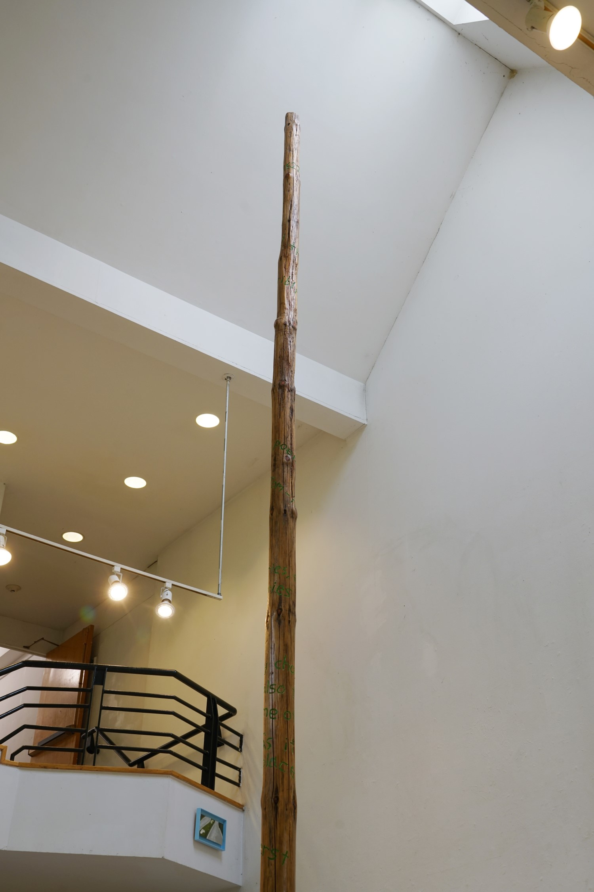
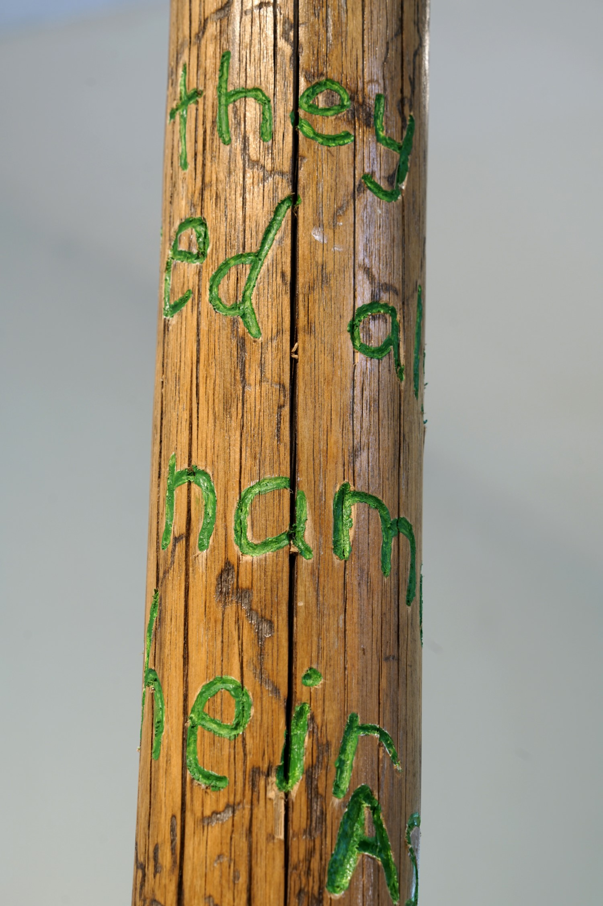
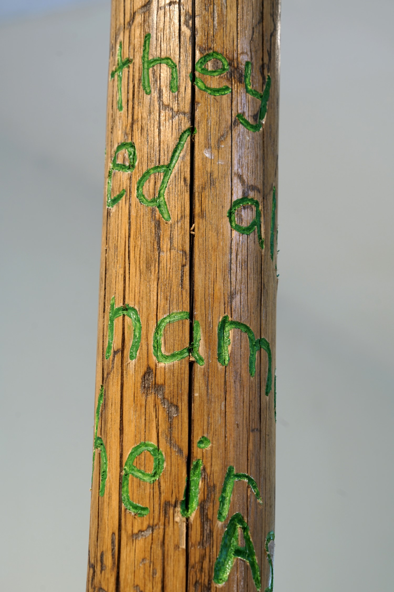

"One hearing or a century of hearings?"
“A goodly pine tree of 80 foot long was reared up, with a pair of buck’s horns nailed on somewhat near unto the top of it; where it stood a fair sea-mark for directions, how to find out the way to Mine Host of Ma-re Mount.”
-Thomas Morton, 1637
"One hearing or a century of hearings?" is an installation and score for resonant objects arranged in a maypole formation. The work takes as its point of departure the arrival of the first English settlers to what would become New England, and the fraught cultural and sonic encounters that ensued. The installation was first presented at Bard College in 2023.
Audio documentation of installation (excerpt)

 
